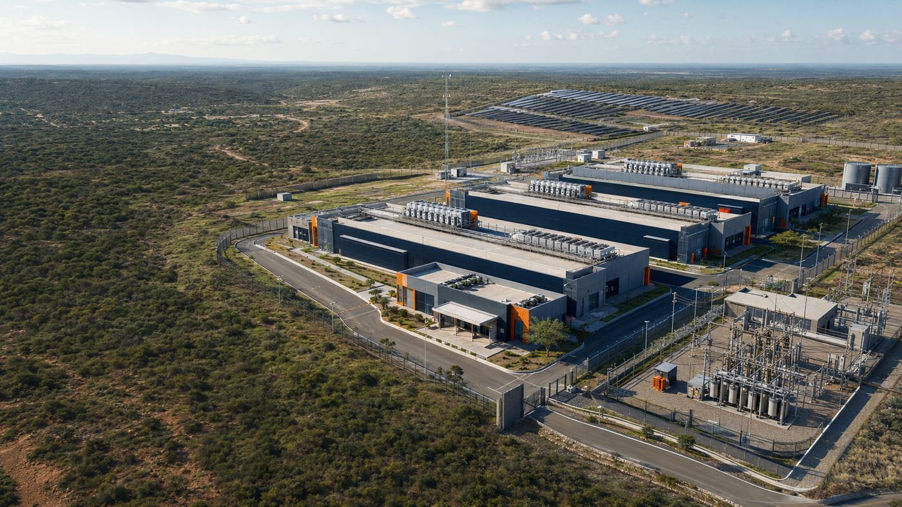
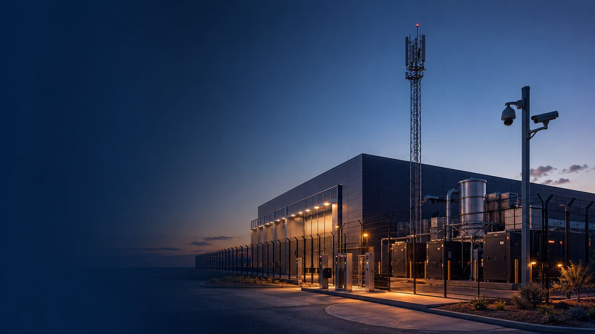

Digital & Telecoms
Financing the networks behind South Africa’s digital economy.
Fibre, data centres, towers and the power and security around them. Our directors have built and run these networks, and we structure the capital to build the next ones.
The opportunity
R140bn+
Between R140 billion and more than R200 billion is needed by 2035 for high-speed broadband and digital connectivity in South Africa.
Source: DBSA Digital Infrastructure Investment Study, 2025
The gap is not appetite for capital. It is a pipeline of technically viable, fundable projects.
That pipeline is what we build: disciplined packaging of digital infrastructure projects, from first screening to a funder-ready deal.
What we finance
Five areas that make digital infrastructure resilient.


-
Connectivity & fibre
Fibre-to-the-home and business, metro and long-haul fibre, towers and fixed wireless: the networks every digital service runs on.
-
Edge & micro data centres
Feasibility, site selection, power integration and financing for low-latency infrastructure supporting 5G, AI, IoT and enterprise.
-
Energy for digital sites
Renewable, hybrid and micro-grid power for data centres, towers and edge sites. Critical to uptime, bankability and ESG performance.
-
Security & surveillance
Physical security, smart surveillance and critical infrastructure protection, increasingly enhanced by digital and AI capabilities.
-
Supporting value chains
Logistics, civil works and the ancillary assets needed to build and run telecommunications and digital infrastructure.
Infrastructure realism, not modelling in isolation.
Why New Generation Capital
We have deployed and operated these networks. Our diligence starts on the ground.
Our directors bring decades in South African and African telecoms, and the New Generation Group operates in connectivity through CircleTel. That experience shapes how we screen, structure and monitor every digital project.
R1.2bn broadband build
Our COO led the City of Johannesburg broadband project. Read the case study
Operator experience
Vodacom (FTTX), MTN, Ericsson, Airtel Nigeria and Ceragon among our directors’ former roles.
Early risk visibility
Deployment issues surface before they undermine the investment case.
Funder alignment
Evidence is packaged the way capital providers decide, and monitored after funding.
How we work
From site to financial close, and beyond.
Every digital project runs through the same seven steps. Only credible, viable and deliverable deals pass our decision gate.
-
01
Find
Source clients who need funding for viable projects.
-
02
Screen
Assess credibility, scalability and business potential.
-
03
Validate
Establish commercial viability and the investment case.
-
04
Package
Structure a funder-ready deal and present it for funding.
-
05
Fund
The capital provider funds approved projects.
Funder’s role -
06
Deliver
Project-manage delivery through to profitable completion.
-
07
Monitor
Report progress, spend and risks to the funder every month, with early warnings.
For project sponsors
Have a project that needs funding?
Tell us about it and share your documents. We will review it and come back to you with next steps.
Submit your projectFor capital providers
Looking for pre-screened deal flow?
We extend your origination reach, check build costs and verify progress before each drawdown, so your capital stays protected.
Partner with us